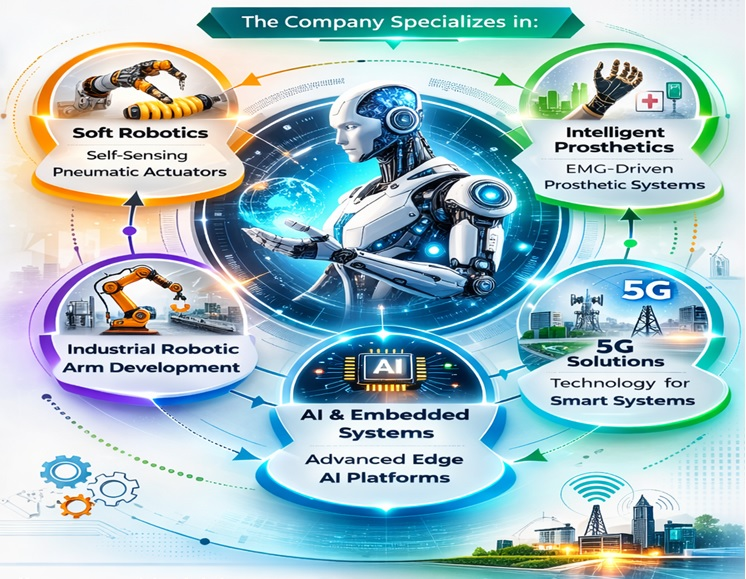

Probionix Labs Pvt. Ltd. is a Thiagarajar College of Engineering (TCE)-incubated deep-tech startup based in Madurai, Tamil Nadu, focused on advanced robotics, intelligent actuation systems, and next-generation embedded technologies.
The company specializes in:
• Soft Robotics & Self-Sensing Pneumatic Actuators
• EMG-driven Intelligent Prosthetic Systems
• Industrial Robotic Arm Development
• Advanced Embedded & Edge AI Platforms
• 5G Technology Solutions for Smart Systems

Probionix Labs develops compliant, lightweight, and human-safe actuation technologies using elastomeric materials integrated with embedded strain sensing and AI-assisted control. Its prosthetic solutions address limitations of conventional rigid systems by enabling adaptive, intuitive, and cost-effective indigenous alternatives for healthcare and rehabilitation.
Beyond healthcare robotics, the company is expanding into:
Industrial Robotics:
Design and development of industrial robotic arm systems for automation, material handling, precision assembly, and collaborative (cobot) applications. These systems focus on modularity, embedded control intelligence, and safety-centric architecture suitable for MSMEs and smart manufacturing environments.
5G Technology Solutions:
Development of 5G-enabled communication platforms for: *Low-latency industrial automation *Remote robotic operation and monitoring *IoT and cyber-physical system integration *Edge computing and smart factory connectivity The company integrates robotics, embedded hardware, AI/ML, and next-generation communication systems to deliver scalable and future-ready engineering solutions.
Traction & Validation: *Functional MVP prototypes developed *Innovation grant winner (Naan Mudhalvan Niral Thiruvizha – ₹1,00,000) *Clinical validation feedback *IP filing under preparation *Industry-oriented product roadmap in robotics and 5G integration
Leadership
1. Dr. G. Prabhakar – Founder & Director
2. Dr. P. G. S. Velmurugan – Director
3. Mrs. M. Anupriya – Director
4. Mr. P. Ajith Pandi – Director
Vision: To establish India’s leading indigenous deep-tech platform for soft robotics, intelligent prosthetics, industrial robotic systems, and 5G-enabled smart automation technologies..
CIN: U32506TN2025PTC179093